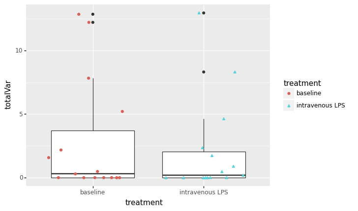
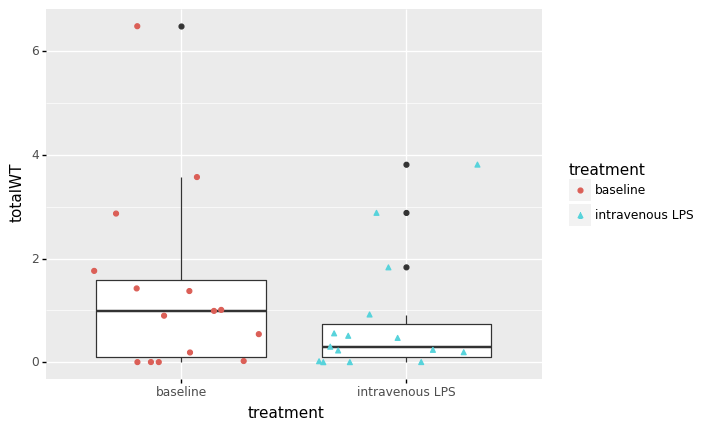
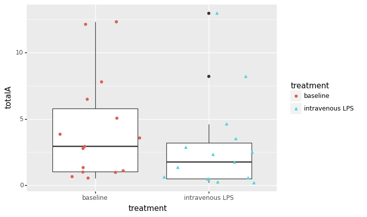
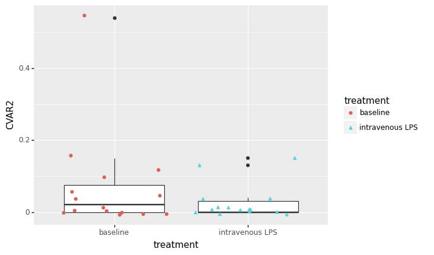
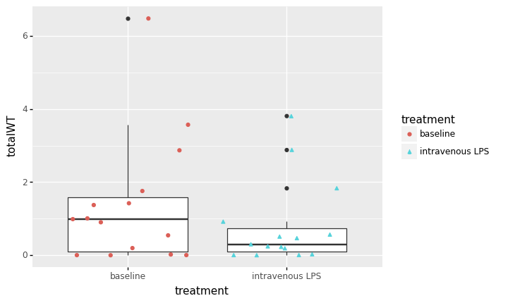

QQ plots for Treatmnent¶
Req¶
Import Requirements¶
HTML formatting¶
from IPython.display import HTML
HTML("""<style type="text/css">
table.dataframe td, table.dataframe th {
max-width: none;
}
</style>
""")
HTML("""<style type="text/css">
table.dataframe td, table.dataframe th {
max-width: none;
white-space: normal;
}
</style>
""")
HTML("""<style type="text/css">
table.dataframe td, table.dataframe th {
max-width: none;
white-space: normal;
line-height: normal;
}
</style>
""")
HTML("""<style type="text/css">
table.dataframe td, table.dataframe th {
max-width: none;
white-space: normal;
line-height: normal;
padding: 0.3em 0.5em;
}
</style>
""")
import numpy as np
import pandas as pd
import scipy
import matplotlib.pyplot as plt
from pandas.api.types import CategoricalDtype
from scipy.stats import *
import scikit_posthocs as sp
from pingouin import friedman
data = pd.read_csv("./NewCols.csv")
Calculating the differences between the noremalized values.¶
data_control = data[data["treatment"] == "baseline"]
data_treatment = data[data["treatment"] == "intravenous LPS"]
procData = data_treatment
procData['diff_AVAR2'] = (
np.array(data_treatment["AVAR2"]) - np.array(data_control["AVAR2"])).tolist()
procData["diff_CVAR2"] = (
np.array(data_treatment["CVAR2"]) - np.array(data_control["CVAR2"])).tolist()
procData["diff_AWT2"] = (np.array(data_treatment["AWT2"]) -
np.array(data_control["AWT2"])).tolist()
procData["diff_CWT2"] = (np.array(data_treatment["CWT2"]) -
np.array(data_control["CWT2"])).tolist()
procData["diff_total2"] = (
np.array(data_control["total2"]) - np.array(data_treatment["total2"])).tolist()
procData["diff_totalA"] = (
np.array(data_treatment["totalA"]) - np.array(data_control["totalA"])).tolist()
procData["diff_totalC"] = (
np.array(data_treatment["totalC"]) - np.array(data_control["totalC"])).tolist()
procData["diff_totalWT"] = (np.array(
data_treatment["totalWT"]) - np.array(data_control["totalWT"])).tolist()
procData["diff_totalVar"] = (np.array(
data_treatment["totalVar"]) - np.array(data_control["totalVar"])).tolist()
<ipython-input-3-981ec0c95d0b>:6: SettingWithCopyWarning:
A value is trying to be set on a copy of a slice from a DataFrame.
Try using .loc[row_indexer,col_indexer] = value instead
See the caveats in the documentation: https://pandas.pydata.org/pandas-docs/stable/user_guide/indexing.html#returning-a-view-versus-a-copy
procData['diff_AVAR2'] = (
<ipython-input-3-981ec0c95d0b>:8: SettingWithCopyWarning:
A value is trying to be set on a copy of a slice from a DataFrame.
Try using .loc[row_indexer,col_indexer] = value instead
See the caveats in the documentation: https://pandas.pydata.org/pandas-docs/stable/user_guide/indexing.html#returning-a-view-versus-a-copy
procData["diff_CVAR2"] = (
<ipython-input-3-981ec0c95d0b>:10: SettingWithCopyWarning:
A value is trying to be set on a copy of a slice from a DataFrame.
Try using .loc[row_indexer,col_indexer] = value instead
See the caveats in the documentation: https://pandas.pydata.org/pandas-docs/stable/user_guide/indexing.html#returning-a-view-versus-a-copy
procData["diff_AWT2"] = (np.array(data_treatment["AWT2"]) -
<ipython-input-3-981ec0c95d0b>:12: SettingWithCopyWarning:
A value is trying to be set on a copy of a slice from a DataFrame.
Try using .loc[row_indexer,col_indexer] = value instead
See the caveats in the documentation: https://pandas.pydata.org/pandas-docs/stable/user_guide/indexing.html#returning-a-view-versus-a-copy
procData["diff_CWT2"] = (np.array(data_treatment["CWT2"]) -
<ipython-input-3-981ec0c95d0b>:16: SettingWithCopyWarning:
A value is trying to be set on a copy of a slice from a DataFrame.
Try using .loc[row_indexer,col_indexer] = value instead
See the caveats in the documentation: https://pandas.pydata.org/pandas-docs/stable/user_guide/indexing.html#returning-a-view-versus-a-copy
procData["diff_total2"] = (
<ipython-input-3-981ec0c95d0b>:18: SettingWithCopyWarning:
A value is trying to be set on a copy of a slice from a DataFrame.
Try using .loc[row_indexer,col_indexer] = value instead
See the caveats in the documentation: https://pandas.pydata.org/pandas-docs/stable/user_guide/indexing.html#returning-a-view-versus-a-copy
procData["diff_totalA"] = (
<ipython-input-3-981ec0c95d0b>:20: SettingWithCopyWarning:
A value is trying to be set on a copy of a slice from a DataFrame.
Try using .loc[row_indexer,col_indexer] = value instead
See the caveats in the documentation: https://pandas.pydata.org/pandas-docs/stable/user_guide/indexing.html#returning-a-view-versus-a-copy
procData["diff_totalC"] = (
<ipython-input-3-981ec0c95d0b>:22: SettingWithCopyWarning:
A value is trying to be set on a copy of a slice from a DataFrame.
Try using .loc[row_indexer,col_indexer] = value instead
See the caveats in the documentation: https://pandas.pydata.org/pandas-docs/stable/user_guide/indexing.html#returning-a-view-versus-a-copy
procData["diff_totalWT"] = (np.array(
<ipython-input-3-981ec0c95d0b>:24: SettingWithCopyWarning:
A value is trying to be set on a copy of a slice from a DataFrame.
Try using .loc[row_indexer,col_indexer] = value instead
See the caveats in the documentation: https://pandas.pydata.org/pandas-docs/stable/user_guide/indexing.html#returning-a-view-versus-a-copy
procData["diff_totalVar"] = (np.array(
Difference Table¶
pd.set_option('display.max_rows', procData.shape[0]+1)
diff_data = procData.loc[ :,"diff_AVAR2":"diff_totalVar" ]
diff_data.describe()
| diff_AVAR2 | diff_CVAR2 | diff_AWT2 | diff_CWT2 | diff_total2 | diff_totalA | diff_totalC | diff_totalWT | diff_totalVar | |
|---|---|---|---|---|---|---|---|---|---|
| count | 15.000000 | 15.000000 | 15.000000 | 15.000000 | 15.000000 | 15.000000 | 15.000000 | 15.000000 | 15.000000 |
| mean | -0.695333 | -0.043333 | -0.630667 | 0.020000 | 1.349333 | -1.326000 | -0.023333 | -0.610667 | -0.738667 |
| std | 2.089395 | 0.144502 | 0.835357 | 0.084769 | 2.165016 | 2.067199 | 0.170992 | 0.762978 | 2.218925 |
| min | -7.700000 | -0.520000 | -2.970000 | -0.070000 | -0.740000 | -7.700000 | -0.520000 | -2.670000 | -8.220000 |
| 25% | -0.290000 | -0.055000 | -0.840000 | -0.010000 | 0.160000 | -1.705000 | -0.080000 | -0.870000 | -0.270000 |
| 50% | 0.000000 | 0.000000 | -0.410000 | 0.000000 | 0.780000 | -0.800000 | 0.000000 | -0.430000 | 0.000000 |
| 75% | 0.000000 | 0.000000 | 0.000000 | 0.020000 | 1.660000 | -0.170000 | 0.045000 | 0.000000 | 0.000000 |
| max | 0.830000 | 0.110000 | 0.080000 | 0.300000 | 8.220000 | 0.830000 | 0.300000 | 0.010000 | 0.740000 |
diff_data.var()
diff_AVAR2 4.365570
diff_CVAR2 0.020881
diff_AWT2 0.697821
diff_CWT2 0.007186
diff_total2 4.687292
diff_totalA 4.273311
diff_totalC 0.029238
diff_totalWT 0.582135
diff_totalVar 4.923627
dtype: float64
diff_data.std()
diff_AVAR2 2.089395
diff_CVAR2 0.144502
diff_AWT2 0.835357
diff_CWT2 0.084769
diff_total2 2.165016
diff_totalA 2.067199
diff_totalC 0.170992
diff_totalWT 0.762978
diff_totalVar 2.218925
dtype: float64
diff_data.skew()
diff_AVAR2 -3.111514
diff_CVAR2 -2.816163
diff_AWT2 -1.826353
diff_CWT2 2.864955
diff_total2 2.497520
diff_totalA -2.274328
diff_totalC -1.420225
diff_totalWT -1.638127
diff_totalVar -3.165627
dtype: float64
diff_data.kurtosis().tolist()
[10.264406796877637,
9.444362749191729,
3.6982075152203597,
9.543320897371544,
7.61247279274705,
6.469933856117286,
5.523875299227822,
2.873242267200818,
10.564445597026406]
diff_data.kurtosis()
diff_AVAR2 10.264407
diff_CVAR2 9.444363
diff_AWT2 3.698208
diff_CWT2 9.543321
diff_total2 7.612473
diff_totalA 6.469934
diff_totalC 5.523875
diff_totalWT 2.873242
diff_totalVar 10.564446
dtype: float64
QQ Data for LPS¶
summary Statistics¶
Baseline - summary stats - summary stats¶
baseline_summary = data_control.loc[:,'AWT2':'total2']
baseline_summary.describe()
| AWT2 | AVAR2 | CWT2 | CVAR2 | total2 | |
|---|---|---|---|---|---|
| count | 15.000000 | 15.000000 | 15.000000 | 15.000000 | 15.00000 |
| mean | 1.392667 | 2.772000 | 0.015333 | 0.070000 | 4.25000 |
| std | 1.754938 | 4.442345 | 0.025317 | 0.138358 | 4.01305 |
| min | 0.000000 | 0.000000 | 0.000000 | 0.000000 | 0.54000 |
| 25% | 0.105000 | 0.000000 | 0.000000 | 0.000000 | 1.10500 |
| 50% | 0.970000 | 0.190000 | 0.000000 | 0.020000 | 2.99000 |
| 75% | 1.560000 | 3.595000 | 0.020000 | 0.075000 | 5.84500 |
| max | 6.480000 | 12.310000 | 0.090000 | 0.540000 | 12.85000 |
Variance & STD DEv¶
baseline_summary.var()
AWT2 3.079807
AVAR2 19.734431
CWT2 0.000641
CVAR2 0.019143
total2 16.104571
dtype: float64
baseline_summary.std()
AWT2 1.754938
AVAR2 4.442345
CWT2 0.025317
CVAR2 0.138358
total2 4.013050
dtype: float64
skew¶
scipy.stats.skew(baseline_summary).tolist()
[1.7972433220325235,
1.3837254728073076,
1.887008077175262,
2.842510792681786,
1.1172243604148848]
Kurtosis¶
scipy.stats.kurtosis(baseline_summary).tolist()
[2.75752748154149,
0.35092024370846486,
3.0210330979027598,
7.236781577188676,
0.07325166351934786]
Intravenous LPS - summary stats¶
LPS_summary = data_treatment.loc[:,'AWT2':'total2']
LPS_summary.describe()
| AWT2 | AVAR2 | CWT2 | CVAR2 | total2 | |
|---|---|---|---|---|---|
| count | 15.000000 | 15.000000 | 15.000000 | 15.000000 | 15.000000 |
| mean | 0.762000 | 2.076667 | 0.035333 | 0.026667 | 2.900667 |
| std | 1.088631 | 3.780445 | 0.077355 | 0.048354 | 3.529809 |
| min | 0.000000 | 0.000000 | 0.000000 | 0.000000 | 0.230000 |
| 25% | 0.105000 | 0.000000 | 0.000000 | 0.000000 | 0.525000 |
| 50% | 0.280000 | 0.190000 | 0.000000 | 0.000000 | 1.830000 |
| 75% | 0.730000 | 1.955000 | 0.030000 | 0.030000 | 3.345000 |
| max | 3.510000 | 12.950000 | 0.300000 | 0.150000 | 12.950000 |
Variance & STd DEv¶
LPS_summary.var()
AWT2 1.185117
AVAR2 14.291767
CWT2 0.005984
CVAR2 0.002338
total2 12.459550
dtype: float64
LPS_summary.std()
AWT2 1.088631
AVAR2 3.780445
CWT2 0.077355
CVAR2 0.048354
total2 3.529809
dtype: float64
Skew¶
scipy.stats.skew(LPS_summary)
array([1.63336448, 1.98898714, 2.92934754, 1.83955534, 1.82536955])
Kurtosis¶
scipy.stats.kurtosis(LPS_summary)
array([1.30399526, 2.82979876, 7.53370866, 1.89996101, 2.57492186])
Graph Data -¶
from plotnine import *
ggplot(data, aes(x='treatment', y='AWT2') ) + geom_boxplot() + geom_jitter(data,aes(colour='treatment',shape='treatment'))

<ggplot: (8789710544219)>
a = 0.05
wilcoxon(data_control["AWT2"],data_treatment["AWT2"])
/opt/anaconda3/envs/fuckMyLife/lib/python3.8/site-packages/scipy/stats/morestats.py:2967: UserWarning: Exact p-value calculation does not work if there are ties. Switching to normal approximation.
WilcoxonResult(statistic=1.0, pvalue=0.0069104298078147995)
ggplot(data, aes(x='treatment', y='CWT2') ) + geom_boxplot() + geom_jitter(data,aes(colour='treatment',shape='treatment'))

<ggplot: (8789710544357)>
a = 0.05
wilcoxon(data_control["CWT2"],data_treatment["CWT2"])
/opt/anaconda3/envs/fuckMyLife/lib/python3.8/site-packages/scipy/stats/morestats.py:2967: UserWarning: Exact p-value calculation does not work if there are ties. Switching to normal approximation.
/opt/anaconda3/envs/fuckMyLife/lib/python3.8/site-packages/scipy/stats/morestats.py:2981: UserWarning: Sample size too small for normal approximation.
WilcoxonResult(statistic=19.0, pvalue=0.6729404357300602)
ggplot(data, aes(x='treatment', y='AVAR2') ) + geom_boxplot() + geom_jitter(data,aes(colour='treatment',shape='treatment'))

<ggplot: (8789712534405)>
a = 0.05
wilcoxon(data_control["AVAR2"],data_treatment["AVAR2"])
/opt/anaconda3/envs/fuckMyLife/lib/python3.8/site-packages/scipy/stats/morestats.py:2967: UserWarning: Exact p-value calculation does not work if there are ties. Switching to normal approximation.
/opt/anaconda3/envs/fuckMyLife/lib/python3.8/site-packages/scipy/stats/morestats.py:2981: UserWarning: Sample size too small for normal approximation.
WilcoxonResult(statistic=7.0, pvalue=0.23672357063785732)
ggplot(data, aes(x='treatment', y='CVAR2') ) + geom_boxplot() + geom_jitter(data,aes(colour='treatment',shape='treatment'))

<ggplot: (8789712571582)>
a = 0.05
wilcoxon(data_control["CVAR2"],data_treatment["CVAR2"])
/opt/anaconda3/envs/fuckMyLife/lib/python3.8/site-packages/scipy/stats/morestats.py:2967: UserWarning: Exact p-value calculation does not work if there are ties. Switching to normal approximation.
/opt/anaconda3/envs/fuckMyLife/lib/python3.8/site-packages/scipy/stats/morestats.py:2981: UserWarning: Sample size too small for normal approximation.
WilcoxonResult(statistic=10.0, pvalue=0.26144605232963014)
ggplot(data, aes(x='treatment', y='total2') ) + geom_boxplot() + geom_jitter(data,aes(colour='treatment',shape='treatment'))

<ggplot: (8789712700880)>
a = 0.05
wilcoxon(diff_data["diff_total2"])
WilcoxonResult(statistic=13.0, pvalue=0.00537109375)
ggplot(data, aes(x='treatment', y='totalVar') ) + geom_boxplot() + geom_jitter(data,aes(colour='treatment',shape='treatment'))

<ggplot: (8789712571426)>
ggplot(diff_data, aes(x=0,y='diff_total2') ) + geom_boxplot() + geom_jitter(diff_data)
<ggplot: (8789712534390)>
data_plot = data_treatment
controlData = data_control['total2']
controlData
0 12.85
1 12.21
2 6.48
3 7.85
4 3.57
5 2.99
6 5.21
7 3.93
8 2.87
9 1.20
10 1.01
11 0.54
12 1.37
13 0.99
14 0.68
Name: total2, dtype: float64
data_plot["ctrl_total2"]=controlData.to_list()
data_plot
<ipython-input-34-e65ed6e0bbb2>:1: SettingWithCopyWarning:
A value is trying to be set on a copy of a slice from a DataFrame.
Try using .loc[row_indexer,col_indexer] = value instead
See the caveats in the documentation: https://pandas.pydata.org/pandas-docs/stable/user_guide/indexing.html#returning-a-view-versus-a-copy
| Sheet # | Run | BioSample | Bases | Bytes | Experiment | GEO_Accession | inflammatory_response | race | Sample Name | ... | diff_AVAR2 | diff_CVAR2 | diff_AWT2 | diff_CWT2 | diff_total2 | diff_totalA | diff_totalC | diff_totalWT | diff_totalVar | ctrl_total2 | |
|---|---|---|---|---|---|---|---|---|---|---|---|---|---|---|---|---|---|---|---|---|---|
| 15 | 16 | SRR4292097 | SAMN05806826 | 56.30 G | 34.32 Gb | SRX2187591 | GSM2326902 | 1 | African American | GSM2326902 | ... | -7.70 | -0.52 | 0.00 | 0.00 | 8.22 | -7.70 | -0.52 | 0.00 | -8.22 | 12.85 |
| 16 | 17 | SRR4292098 | SAMN05806825 | 55.41 G | 33.89 Gb | SRX2187592 | GSM2326903 | 1 | Caucasian | GSM2326903 | ... | 0.83 | -0.09 | 0.00 | 0.00 | -0.74 | 0.83 | -0.09 | 0.00 | 0.74 | 12.21 |
| 17 | 18 | SRR4292099 | SAMN05806824 | 47.95 G | 29.16 Gb | SRX2187593 | GSM2326904 | 1 | Caucasian | GSM2326904 | ... | 0.00 | 0.00 | -2.97 | 0.30 | 2.67 | -2.97 | 0.30 | -2.67 | 0.00 | 6.48 |
| 18 | 19 | SRR4292100 | SAMN05806823 | 47.04 G | 28.94 Gb | SRX2187594 | GSM2326905 | 1 | Caucasian | GSM2326905 | ... | 0.41 | 0.07 | 0.00 | 0.00 | -0.48 | 0.41 | 0.07 | 0.00 | 0.48 | 7.85 |
| 19 | 20 | SRR4292101 | SAMN05806822 | 25.25 G | 16.33 Gb | SRX2187595 | GSM2326906 | 1 | Caucasian | GSM2326906 | ... | 0.00 | 0.00 | -1.83 | 0.09 | 1.74 | -1.83 | 0.09 | -1.74 | 0.00 | 3.57 |
| 20 | 21 | SRR4292102 | SAMN05806821 | 27.70 G | 17.89 Gb | SRX2187596 | GSM2326907 | 1 | African American | GSM2326907 | ... | -0.65 | -0.02 | -0.93 | 0.02 | 1.58 | -1.58 | 0.00 | -0.91 | -0.67 | 2.99 |
| 21 | 22 | SRR4292103 | SAMN05806820 | 17.58 G | 11.40 Gb | SRX2187597 | GSM2326908 | -1 | Caucasian | GSM2326908 | ... | -2.74 | -0.11 | 0.00 | 0.00 | 2.85 | -2.74 | -0.11 | 0.00 | -2.85 | 5.21 |
| 22 | 23 | SRR4292104 | SAMN05806819 | 25.12 G | 16.21 Gb | SRX2187598 | GSM2326909 | -1 | Caucasian | GSM2326909 | ... | -0.54 | 0.11 | -0.82 | -0.02 | 1.27 | -1.36 | 0.09 | -0.84 | -0.43 | 3.93 |
| 23 | 24 | SRR4292105 | SAMN05806818 | 26.42 G | 17.05 Gb | SRX2187599 | GSM2326910 | -1 | Caucasian | GSM2326910 | ... | 0.00 | 0.00 | 0.08 | -0.07 | -0.01 | 0.08 | -0.07 | 0.01 | 0.00 | 2.87 |
| 24 | 25 | SRR4292106 | SAMN05806817 | 9.88 G | 5.85 Gb | SRX2187600 | GSM2326911 | 1 | Caucasian | GSM2326911 | ... | 0.00 | -0.11 | -0.62 | 0.02 | 0.71 | -0.62 | -0.09 | -0.60 | -0.11 | 1.20 |
| 25 | 26 | SRR4292107 | SAMN05806816 | 6.14 G | 3.59 Gb | SRX2187601 | GSM2326912 | 1 | African American | GSM2326912 | ... | 0.00 | 0.00 | -0.80 | 0.02 | 0.78 | -0.80 | 0.02 | -0.78 | 0.00 | 1.01 |
| 26 | 27 | SRR4292108 | SAMN05806815 | 9.42 G | 5.60 Gb | SRX2187602 | GSM2326913 | -1 | African American | GSM2326913 | ... | 0.00 | 0.00 | -0.30 | 0.00 | 0.30 | -0.30 | 0.00 | -0.30 | 0.00 | 0.54 |
| 27 | 28 | SRR4292109 | SAMN05806814 | 7.90 G | 4.72 Gb | SRX2187603 | GSM2326914 | -1 | African American | GSM2326914 | ... | 0.00 | 0.00 | -0.86 | -0.04 | 0.90 | -0.86 | -0.04 | -0.90 | 0.00 | 1.37 |
| 28 | 29 | SRR4292110 | SAMN05806813 | 11.19 G | 6.65 Gb | SRX2187604 | GSM2326915 | -1 | Caucasian | GSM2326915 | ... | 0.00 | 0.00 | -0.41 | -0.02 | 0.43 | -0.41 | -0.02 | -0.43 | 0.00 | 0.99 |
| 29 | 30 | SRR4292111 | SAMN05806812 | 6.61 G | 4.20 Gb | SRX2187605 | GSM2326916 | -1 | African American | GSM2326916 | ... | -0.04 | 0.02 | 0.00 | 0.00 | 0.02 | -0.04 | 0.02 | 0.00 | -0.02 | 0.68 |
15 rows × 42 columns
ggplot(data_plot,aes(x='total2',y='ctrl_total2') ) + geom_point() + geom_smooth(method='lm')

<ggplot: (8789712838081)>
from sklearn import linear_model
lm = linear_model.LinearRegression()
shapiro_test = shapiro(data_control['total2'])
shapiro_test
ShapiroResult(statistic=0.8312229514122009, pvalue=0.009520275518298149)
shapiro_test = shapiro(data_treatment['total2'])
shapiro_test
ShapiroResult(statistic=0.747516393661499, pvalue=0.0008409483707509935)
shapiro_test = shapiro(diff_data['diff_total2'])
shapiro_test
ShapiroResult(statistic=0.7386533617973328, pvalue=0.0006647082045674324)
a = 0.05
wilcoxon(diff_data["diff_totalVar"])
/opt/anaconda3/envs/fuckMyLife/lib/python3.8/site-packages/scipy/stats/morestats.py:2967: UserWarning: Exact p-value calculation does not work if there are ties. Switching to normal approximation.
/opt/anaconda3/envs/fuckMyLife/lib/python3.8/site-packages/scipy/stats/morestats.py:2981: UserWarning: Sample size too small for normal approximation.
WilcoxonResult(statistic=10.0, pvalue=0.2626182904425206)
ggplot(data, aes(x='treatment', y='totalWT') ) + geom_boxplot() + geom_jitter(data,aes(colour='treatment',shape='treatment'))

<ggplot: (8789712531264)>
a = 0.05
wilcoxon(diff_data["diff_totalWT"])
/opt/anaconda3/envs/fuckMyLife/lib/python3.8/site-packages/scipy/stats/morestats.py:2967: UserWarning: Exact p-value calculation does not work if there are ties. Switching to normal approximation.
WilcoxonResult(statistic=1.0, pvalue=0.0069104298078147995)
ggplot(data, aes(x='treatment', y='totalA') ) + geom_boxplot() + geom_jitter(data,aes(colour='treatment',shape='treatment'))

<ggplot: (8789712535327)>
ggplot(data, aes(x='treatment', y='totalC') ) + geom_boxplot() + geom_jitter(data,aes(colour='treatment',shape='treatment'))

<ggplot: (8789705876128)>
Statistics¶
Total 2 Comparison¶
Wilcoxon non-parametric¶
a = 0.05
w, p = wilcoxon(data_control["total2"],data_treatment["total2"])
print(w, p)
13.0 0.00537109375
if (p < a):
print("As P"+str(p)+" is less than a: "+str(a))
print( "we reject the Null Hypothesis.")
print(". There is significant difference betwween the groups")
else:
print("As P"+p+" is larger than a: "+str(a))
print( "we FAIL TO reject the Null Hypothesis.")
print(". There is NOT a significant difference betwween the groups")
As P0.00537109375 is less than a: 0.05
we reject the Null Hypothesis.
. There is significant difference betwween the groups
Freidman’s Anova¶
sp.posthoc_nemenyi_friedman(diff_data)
| diff_AVAR2 | diff_CVAR2 | diff_AWT2 | diff_CWT2 | diff_total2 | diff_totalA | diff_totalC | diff_totalWT | diff_totalVar | |
|---|---|---|---|---|---|---|---|---|---|
| diff_AVAR2 | 1.000000 | 0.900000 | 0.719090 | 0.900000 | 0.385873 | 0.321768 | 0.900000 | 0.759541 | 0.900000 |
| diff_CVAR2 | 0.900000 | 1.000000 | 0.597725 | 0.900000 | 0.516816 | 0.215913 | 0.900000 | 0.638181 | 0.900000 |
| diff_AWT2 | 0.719090 | 0.597725 | 1.000000 | 0.363819 | 0.002710 | 0.900000 | 0.557270 | 0.900000 | 0.900000 |
| diff_CWT2 | 0.900000 | 0.900000 | 0.363819 | 1.000000 | 0.739314 | 0.088304 | 0.900000 | 0.408266 | 0.900000 |
| diff_total2 | 0.385873 | 0.516816 | 0.002710 | 0.739314 | 1.000000 | 0.001000 | 0.557270 | 0.003528 | 0.215913 |
| diff_totalA | 0.321768 | 0.215913 | 0.900000 | 0.088304 | 0.001000 | 1.000000 | 0.186146 | 0.900000 | 0.516816 |
| diff_totalC | 0.900000 | 0.900000 | 0.557270 | 0.900000 | 0.557270 | 0.186146 | 1.000000 | 0.597725 | 0.900000 |
| diff_totalWT | 0.759541 | 0.638181 | 0.900000 | 0.408266 | 0.003528 | 0.900000 | 0.597725 | 1.000000 | 0.900000 |
| diff_totalVar | 0.900000 | 0.900000 | 0.900000 | 0.900000 | 0.215913 | 0.516816 | 0.900000 | 0.900000 | 1.000000 |
Friedman Tes
other¶
a = 0.05
w, p = wilcoxon(data_control["AWT2"],data_treatment["AWT2"])
print(w, p)
1.0 0.0069104298078147995
/opt/anaconda3/envs/fuckMyLife/lib/python3.8/site-packages/scipy/stats/morestats.py:2967: UserWarning: Exact p-value calculation does not work if there are ties. Switching to normal approximation.
a = 0.05
w, p = wilcoxon(data_control["CVAR2"],data_treatment["CVAR2"])
print(w, p)
10.0 0.26144605232963014
/opt/anaconda3/envs/fuckMyLife/lib/python3.8/site-packages/scipy/stats/morestats.py:2981: UserWarning: Sample size too small for normal approximation.
a = 0.05
w, p = wilcoxon(data_control["AWT2"],data_treatment["CWT2"])
print(w, p)
0.0 0.002217721464237049
a = 0.05
w, p = wilcoxon(data_control["total2"],data_treatment["total2"])
print(w, p)
13.0 0.00537109375
2 graphs
Do the Table
Black and white
Make sure its not sloppy
control, LPS & Difference.
correlation plot for each patient - total 2 & diff_total2
Look for A/C ratios
ggplot(data_plot,aes(x=’total2’,y=’ctrl_total2’) ) + geom_point(colour) + geom_smooth(method=’lm’)